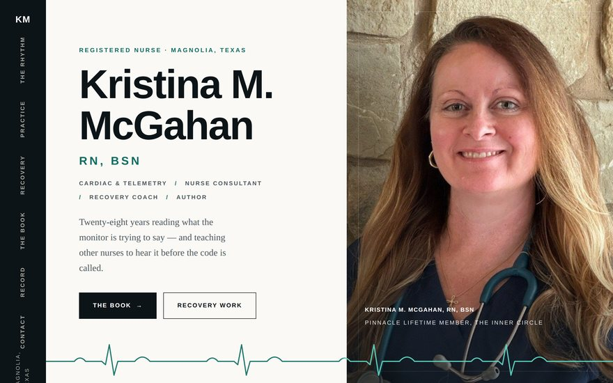
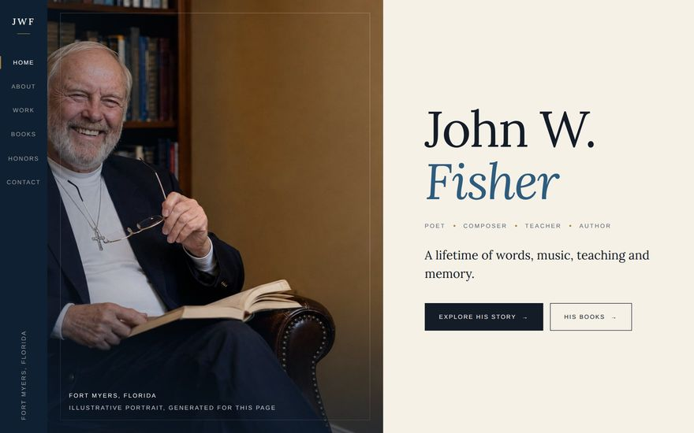
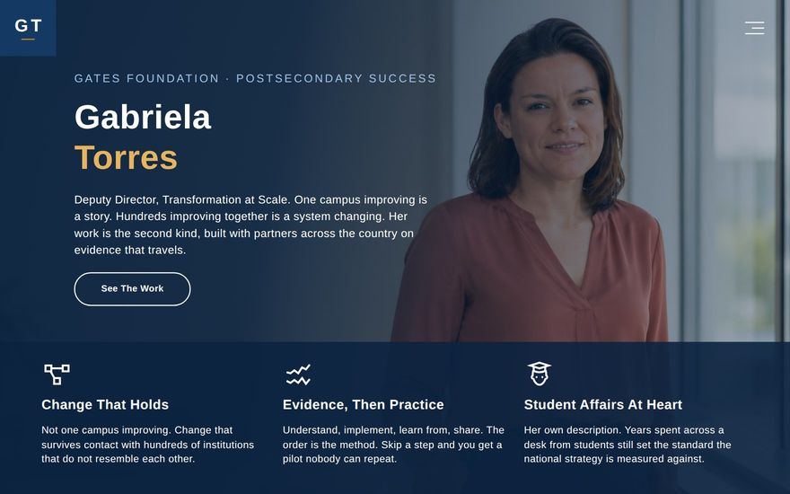
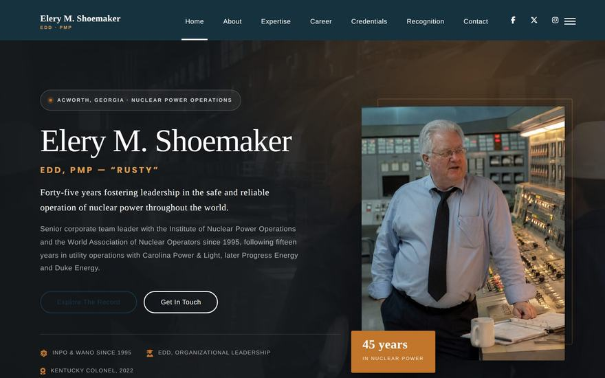
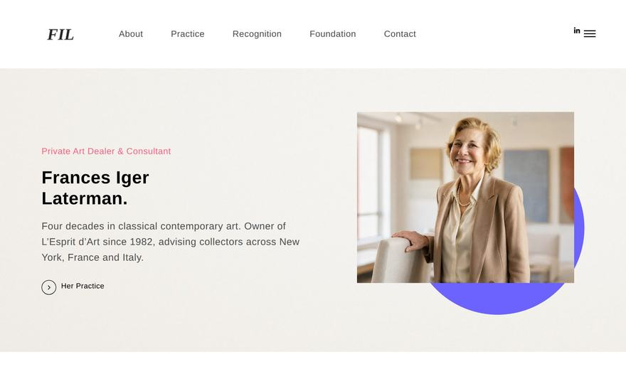
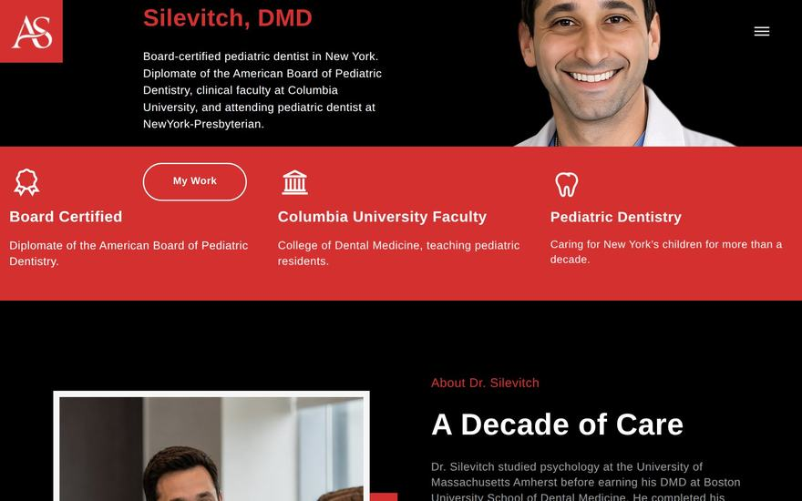
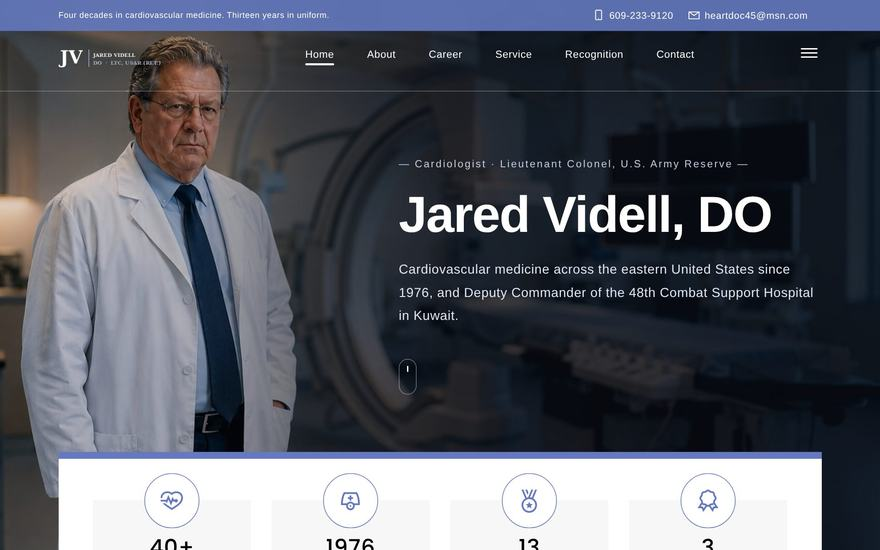
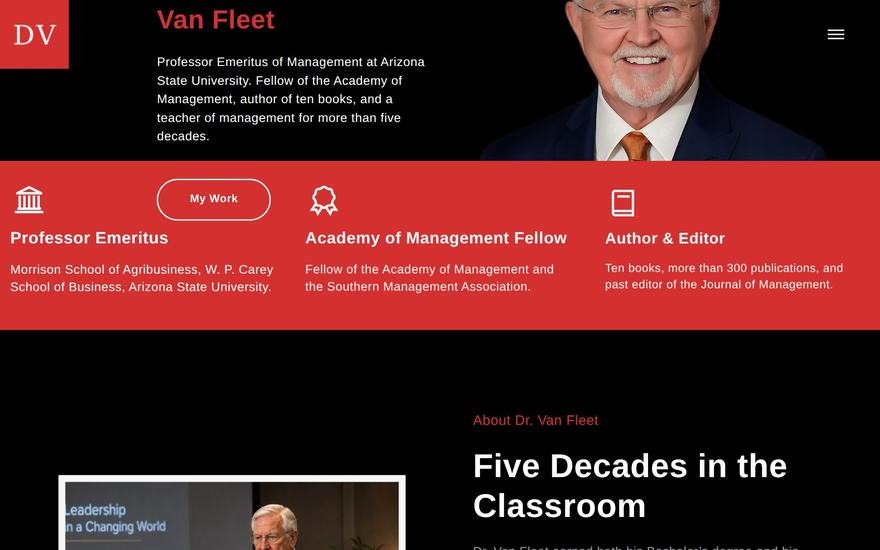
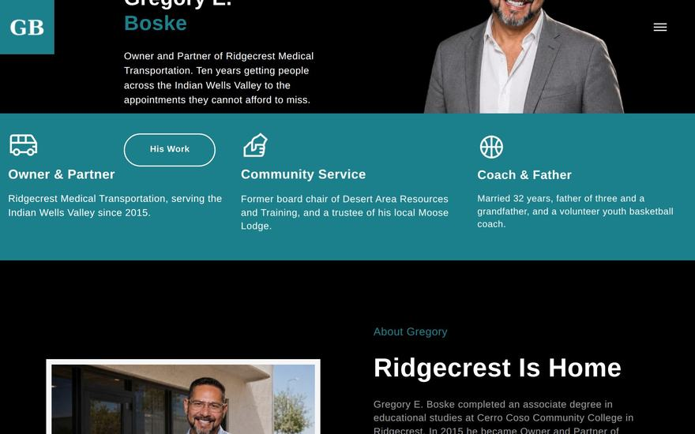

The portfolio
Every site, click to open
Screenshots of the real pages, taken today. The newest work is first.

Built from scratch around an original ECG graphic system — a rhythm strip that draws itself, and a burnout-to-recovery trace. Three verified purchase links for her book.
Visit site →Forty years of practice in New York, in five languages. Built from scratch, with her own portrait and six editorial photographs.
Visit site →
Built from scratch rather than from a template. Twelve editorial photographs, four alternating layouts, and verified purchase links for both published books.
Visit site →
Transformation at Scale, Postsecondary Success. Every photograph on the page had been downloading but never painting; fixed this week.
Visit site →He led the legal work behind the world’s first FAA certified drone airline. New this week, in a warm brown palette.
Visit site →
Forty five years in nuclear power. The site walks through his career, his four degrees and every certification he holds.
Visit site →
Her contact form looked fine but every message sent through it was being thrown away. Found it this week, fixed it, and checked that it works.
Visit site →Thirty three years at the same firm, and now she owns it. Her career timeline used to be a slideshow that showed one step and hid the other four. Rebuilt this week so the whole story reads straight down the page.
Visit site →His client list runs to 28 organisations, shown with their real logos and ordered by how well known they are. This site replaces the one he had before.
Visit site →
Ten years of pediatric dentistry in New York. His appointment form has been tested and it works.
Visit site →
Practising cardiology since 1976, and Deputy Commander of the 48th Combat Support Hospital. His form works, and shared links now show a proper preview.
Visit site →Four degrees, all pointing at one question: what does this learner actually need. Her contact section used to lead nowhere. It works now.
Visit site →
Fifty years of teaching at Arizona State. Fellow of the Academy of Management, and the author of more than 200 publications.
Visit site →
Owner and partner, serving the Indian Wells Valley. Community work runs right through the site, because it runs right through his life.
Visit site →Done this week
What changed since the last report.
- Four sites this weekElery Shoemaker and Andrew Cooper written, built and put live. Frances Laterman and Kathleen Werner both repaired. Details below.
- A broken form found and fixedFrances Laterman’s contact form was throwing away every message anyone sent. It works now.
- Accessibility on CooperAnyone using a keyboard could not see where they were on the page. That is fixed, along with the menu, the section links and the slider.
- Kathleen Werner rebuiltHer career timeline was a slideshow with no arrows and no dots. Visitors saw one step out of five and had no way to reach the rest, on phones and desktops alike. It now reads straight down the page, and her About photo, which had been invisible on desktop, is back.
- Faster pagesCooper’s site is 355KB lighter and loads in half the time it did.
Still open
Worth knowing now rather than later.
- Worth a decisionKathleen Werner only gives a phone number. An email address or a form would probably bring her more work.
- Waiting on youRichard Favorito cannot be started until we have a press release or an existing site to work from.
- Quick jobThe new contact forms each need one test message sent through them before they start delivering.